物理（10 门）
FIG. 01物理
 光电效应HS-PS4-3 · Physics §21.2
光电效应HS-PS4-3 · Physics §21.2FIG. 02物理
 观察电容器的充放电Physics §18.5
观察电容器的充放电Physics §18.5FIG. 03物理
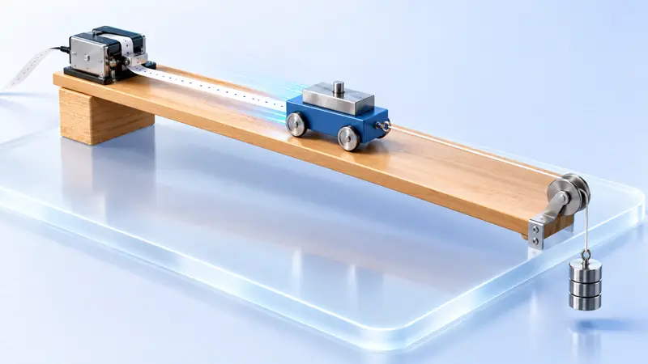
实验：探究加速度与力、质量的关系HS-PS2-1 · Physics §4.3FIG. 04物理
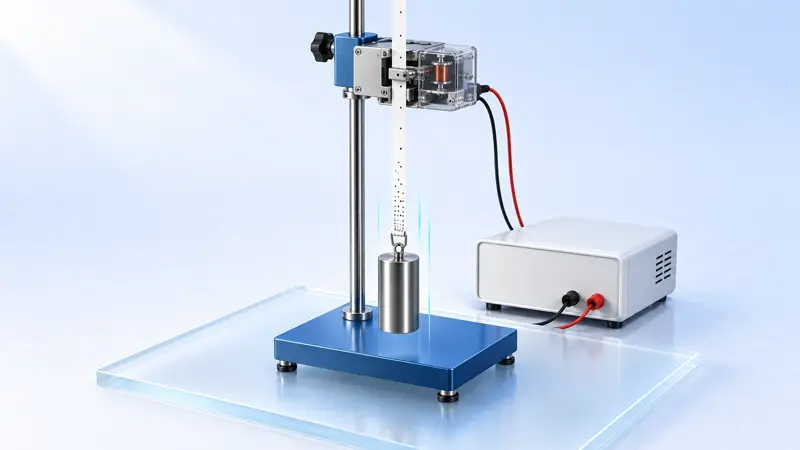
实验：验证机械能守恒定律HS-PS3-1 · HS-PS3-2 · Physics §9.2FIG. 05物理
 实验：探究平抛运动的特点HS-PS2-1 · Physics §5.3
实验：探究平抛运动的特点HS-PS2-1 · Physics §5.3FIG. 06物理
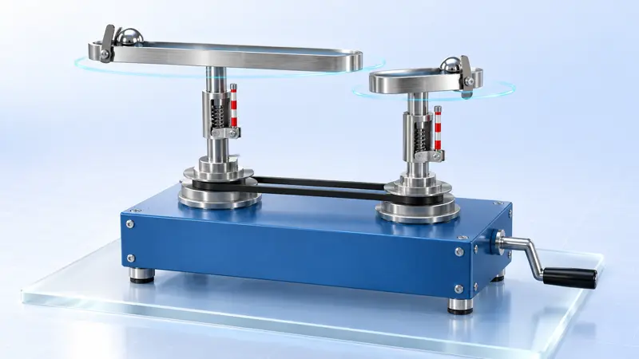
向心力大小与半径、角速度及质量的关系HS-PS2-1 · Physics §6.2FIG. 07物理
 自感与涡流HS-PS2-5 · HS-PS3-5 · College Physics 2e §23.9 · College Physics 2e §23.4
自感与涡流HS-PS2-5 · HS-PS3-5 · College Physics 2e §23.9 · College Physics 2e §23.4FIG. 08物理
 测电源电动势和内阻College Physics 2e §21.2
测电源电动势和内阻College Physics 2e §21.2FIG. 09物理
 电流的磁场HS-PS2-5 · Physics §20.1
电流的磁场HS-PS2-5 · Physics §20.1FIG. 10物理
 布朗运动与扩散College Physics 2e §13.4
布朗运动与扩散College Physics 2e §13.4化学（25 门）
FIG. 01化学
 合成氨工业HS-PS1-6 · HS-ETS1-3 · Chemistry 2e §13.3
合成氨工业HS-PS1-6 · HS-ETS1-3 · Chemistry 2e §13.3FIG. 02化学
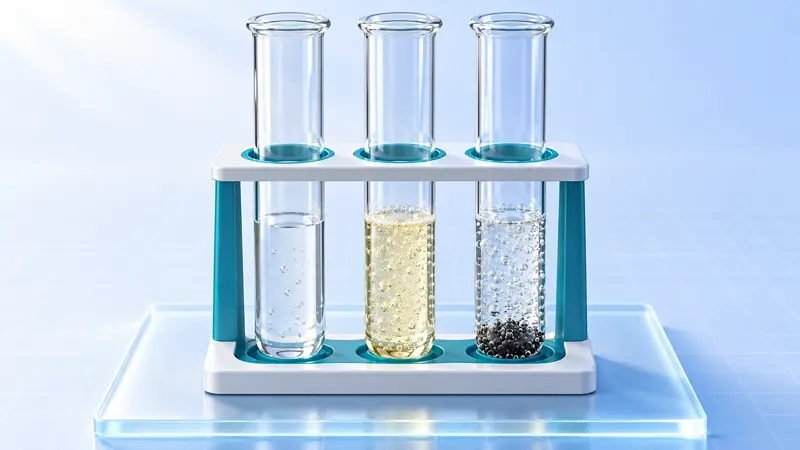
化学反应速率的影响因素HS-PS1-5 · Chemistry 2e §12.2FIG. 03化学
 搭建球棍模型 · 认识有机分子结构Chemistry 2e §7.6 · Chemistry 2e §20.1
搭建球棍模型 · 认识有机分子结构Chemistry 2e §7.6 · Chemistry 2e §20.1FIG. 04化学
 强酸与强碱的中和滴定HS-PS1-7 · HS-PS1-6 · Chemistry 2e §14.7
强酸与强碱的中和滴定HS-PS1-7 · HS-PS1-6 · Chemistry 2e §14.7FIG. 05化学
 氯气的制备及性质HS-PS1-2 · Chemistry 2e §18.11
氯气的制备及性质HS-PS1-2 · Chemistry 2e §18.11FIG. 06化学
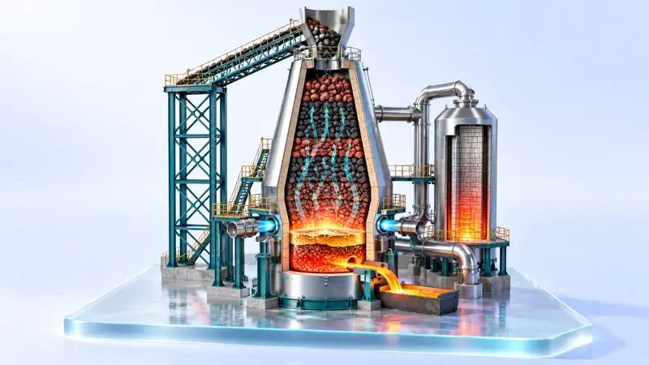
高炉炼铁HS-PS1-2 · HS-ETS1-3 · Chemistry 2e §19.1FIG. 07化学
 金属冶炼：电解熔融盐 + 铝热HS-PS1-2 · HS-ETS1-3 · Chemistry 2e §17.7 · Chemistry 2e §19.1
金属冶炼：电解熔融盐 + 铝热HS-PS1-2 · HS-ETS1-3 · Chemistry 2e §17.7 · Chemistry 2e §19.1FIG. 08化学
 煤的综合利用：以煤的气化为主线—
煤的综合利用：以煤的气化为主线—FIG. 09化学
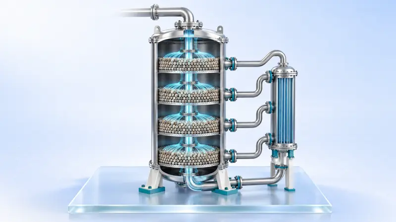
接触法制硫酸HS-PS1-6 · HS-ETS1-3FIG. 10化学
 盐类的水解及其应用Chemistry 2e §14.4
盐类的水解及其应用Chemistry 2e §14.4FIG. 11化学
 工业制水泥—
工业制水泥—FIG. 12化学
 铁及其化合物：铁的价态转化HS-PS1-2 · Chemistry 2e §19.1
铁及其化合物：铁的价态转化HS-PS1-2 · Chemistry 2e §19.1FIG. 13化学
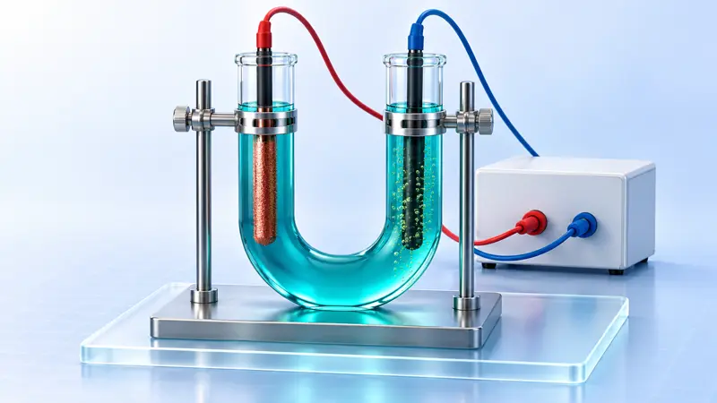
电解原理：电解 CuCl₂ 溶液与饱和食盐水HS-PS1-2 · HS-ETS1-3 · Chemistry 2e §17.7FIG. 14化学
 氨的制备与性质（含喷泉实验）HS-PS1-2 · Chemistry 2e §18.7
氨的制备与性质（含喷泉实验）HS-PS1-2 · Chemistry 2e §18.7FIG. 15化学
 探究影响化学平衡移动的因素HS-PS1-6 · Chemistry 2e §13.3
探究影响化学平衡移动的因素HS-PS1-6 · Chemistry 2e §13.3FIG. 16化学
 焰色试验与原子光谱Chemistry 2e §6.2 · Chemistry 2e §6.1
焰色试验与原子光谱Chemistry 2e §6.2 · Chemistry 2e §6.1FIG. 17化学
 原电池：单液到双液HS-PS3-3 · HS-PS1-2 · Chemistry 2e §17.2
原电池：单液到双液HS-PS3-3 · HS-PS1-2 · Chemistry 2e §17.2FIG. 18化学
 电解质的电离与溶液导电性、离子反应的实质HS-PS1-3 · Chemistry 2e §11.2
电解质的电离与溶液导电性、离子反应的实质HS-PS1-3 · Chemistry 2e §11.2FIG. 19化学
 浓稀硝酸的性质与氮氧化物的转化HS-PS1-2 · Chemistry 2e §18.7
浓稀硝酸的性质与氮氧化物的转化HS-PS1-2 · Chemistry 2e §18.7FIG. 20化学
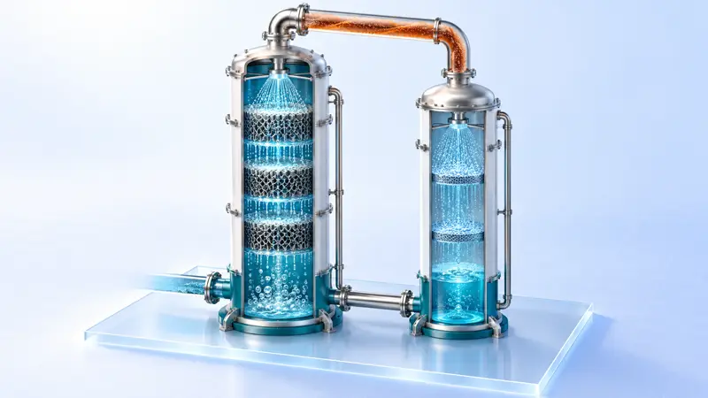
海水提溴：空气吹出法HS-PS1-2 · HS-ESS3-2 · Chemistry 2e §18.11FIG. 21化学
 金属钠的性质（含钠着火扑救）HS-PS1-2 · Chemistry 2e §18.2
金属钠的性质（含钠着火扑救）HS-PS1-2 · Chemistry 2e §18.2FIG. 22化学
 硫、二氧化硫、浓硫酸的性质与不同价态含硫物质的转化HS-PS1-2 · Chemistry 2e §18.10
硫、二氧化硫、浓硫酸的性质与不同价态含硫物质的转化HS-PS1-2 · Chemistry 2e §18.10FIG. 23化学
 吸氧腐蚀与暖贴的设计HS-PS1-2 · HS-ETS1-3 · Chemistry 2e §17.6
吸氧腐蚀与暖贴的设计HS-PS1-2 · HS-ETS1-3 · Chemistry 2e §17.6FIG. 24化学
 氯碱工业HS-PS1-2 · HS-ETS1-3 · Chemistry 2e §17.7
氯碱工业HS-PS1-2 · HS-ETS1-3 · Chemistry 2e §17.7FIG. 25化学
 侯氏制碱—
侯氏制碱—生物（5 门）
 神经冲动的产生和传导Biology 2e §35.2
神经冲动的产生和传导Biology 2e §35.2地理（10 门）
FIG. 01地理
 河流地貌的发育HS-ESS2-5 · HS-ESS2-1
河流地貌的发育HS-ESS2-5 · HS-ESS2-1FIG. 02地理
 海—气相互作用与厄尔尼诺、拉尼娜MS-ESS2-6
海—气相互作用与厄尔尼诺、拉尼娜MS-ESS2-6FIG. 03地理
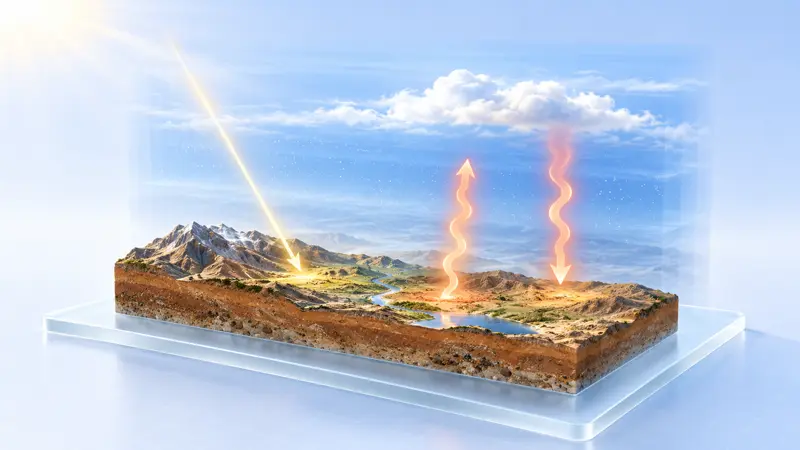
大气受热过程HS-ESS2-4FIG. 04地理
 喀斯特地貌的形成与识别HS-ESS2-5 · HS-ESS2-2
喀斯特地貌的形成与识别HS-ESS2-5 · HS-ESS2-2FIG. 05地理
 全球气候变化与国家安全HS-ESS3-5 · HS-ESS2-6 · Biology 2e §44.5
全球气候变化与国家安全HS-ESS3-5 · HS-ESS2-6 · Biology 2e §44.5FIG. 06地理
 构造地貌的形成HS-ESS2-1 · HS-ESS1-5
构造地貌的形成HS-ESS2-1 · HS-ESS1-5FIG. 07地理
 土壤的形成因素与剖面观察Biology 2e §31.2
土壤的形成因素与剖面观察Biology 2e §31.2FIG. 08地理
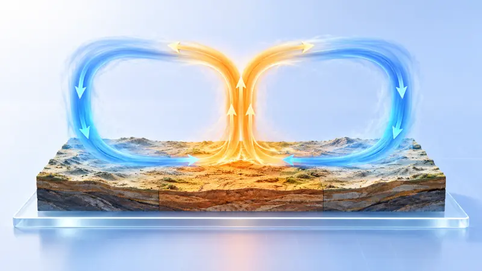
大气热力环流MS-ESS2-6FIG. 09地理
 大气的水平运动——风MS-ESS2-6
大气的水平运动——风MS-ESS2-6FIG. 10地理
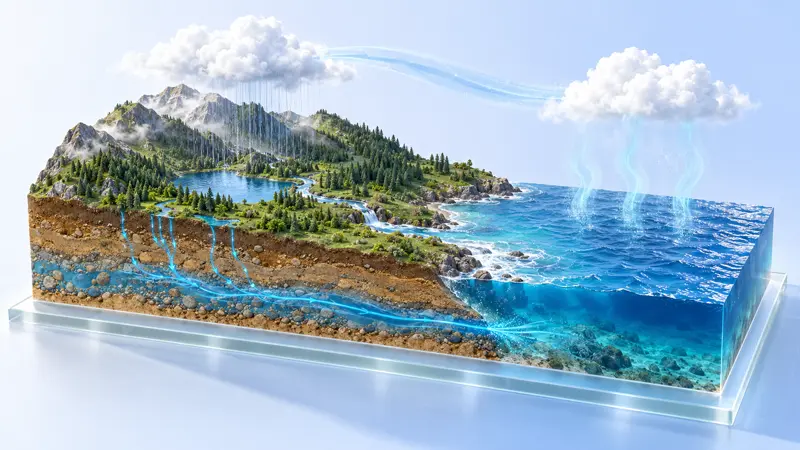
水循环的过程与地理意义MS-ESS2-4 · Biology 2e §46.3